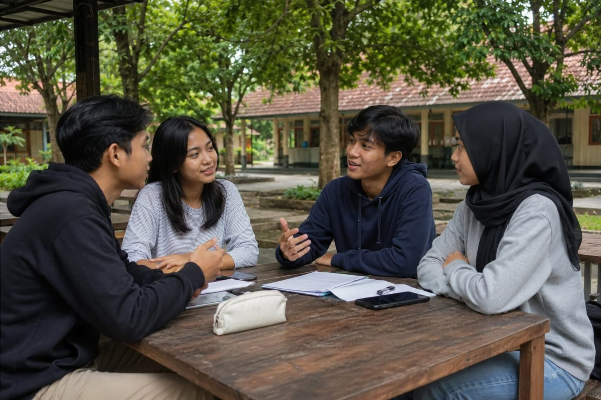

Wicara bab njaga lingkungan ngangge basa Jawa
Ing kaca menika, kita badhe nyinau pacelathon (dialog) bab njaga lingkungan kanthi ngangge basa Jawa ngoko lan krama inggil. Pacelathon menika minangka tuladha anggenipun ngrembag babagan lingkungan hidup ing saben dinten, kanthi nggatosaken unggah-ungguhing basa Jawa.
Basa ingkang dipunginakaken dhateng tiyang ingkang sampun rumaket utawi ingkang langkung enem. Tuladha: "Kowe arep menyang ngendi?"
Basa ingkang dipunginakaken dhateng tiyang ingkang langkung sepuh utawi ingkang dereng rumaket. Tuladha: "Panjenengan badhe tindak pundi?"
Basa ingkang paling alus, dipunginakaken kangge ngurmati tiyang ingkang langkung sepuh utawi nduweni pangkat. Tuladha: "Bapak badhe rawuh pundi?"
🌍 Papan: Ing sekolah | Basa Jawa Krama

"Rencang-rencang, kula badhe ngajak rembagan babagan lingkungan gesang, mliginipun cara ngirangi emisi karbon ingkang sapunika dados salah satunggaling masalah paling ageng ing donya."
— "Teman-teman, saya ingin mengajak berdiskusi tentang lingkungan hidup, khususnya cara mengurangi emisi karbon yang kini menjadi salah satu masalah terbesar di dunia."
"Inggih, Bima. Kula ugi asring mireng pawartos babagan owah-owahan iklim, nanging saestu emisi karbon menika punapa lan punapa pengaribawanipun tumrap gesang padintenan?"
— "Iya, Bima. Saya juga sering mendengar berita tentang perubahan iklim, tapi sebenarnya emisi karbon itu apa dan apa pengaruhnya terhadap kehidupan sehari-hari?"
"Emisi karbon menika gas karbon dioksida ingkang kathah dipunasilaken saking kendaraan bermotor, pabrik, pembangkit listrik, saha kagiyatan manungsa sanesipun ingkang migunakaken bahan bakar fosil. Menawi cacahipun saya kathah, suhu bumi ugi badhe saya mundhak."
— "Emisi karbon adalah gas karbon dioksida yang banyak dihasilkan dari kendaraan bermotor, pabrik, pembangkit listrik, dan aktivitas manusia lainnya yang menggunakan bahan bakar fosil. Jika jumlahnya semakin banyak, suhu bumi pun akan semakin naik."
"Leres menika. Akibatipun boten namung ndadosaken hawa langkung panas, nanging ugi saged nyebabaken banjir, kekeringan, cuaca ekstrem, saha karusakan ekosistem wonten ing maneka papan."
— "Benar itu. Akibatnya tidak hanya membuat udara lebih panas, tetapi juga dapat menyebabkan banjir, kekeringan, cuaca ekstrem, dan kerusakan ekosistem di berbagai tempat."
"Kula nate maos bilih sawetawis wilayah sapunika langkung asring ngalami mangsa ingkang boten teratur amargi pengaruh pemanasan global. Mila masalah menika saestu kedah dipungatosaken sesarengan."
— "Saya pernah membaca bahwa beberapa wilayah kini lebih sering mengalami musim yang tidak teratur akibat pengaruh pemanasan global. Maka masalah ini sungguh perlu diperhatikan bersama."
"Menawi mekaten, punapa ingkang saged dipuntindakaken dening kita minangka siswa? Kula kraos bilih masalah menika sanget ageng menawi namung dipuntangani dening sawetawis tiyang."
— "Kalau begitu, apa yang bisa kita lakukan sebagai siswa? Saya rasa masalah ini sangat besar jika hanya ditangani oleh segelintir orang."
"Senajan kita taksih dados siswa, wonten kathah langkah prasaja ingkang saged dipuntindakaken. Tuladhanipun, menawi badhe tindak dhateng papan ingkang caket, langkung sae mlampah utawi numpak sepeda tinimbang migunakaken sepeda motor."
— "Meskipun kita masih menjadi siswa, ada banyak langkah sederhana yang bisa dilakukan. Contohnya, bila akan pergi ke tempat yang dekat, lebih baik berjalan kaki atau naik sepeda daripada menggunakan sepeda motor."
"Kula sarujuk. Kajawi menika, migunakaken transportasi umum ugi saged mbantu nyuda cacah kendaraan pribadi wonten ing dalan, saengga emisi karbon saged dipunirangi."
— "Saya setuju. Selain itu, menggunakan transportasi umum juga dapat membantu mengurangi jumlah kendaraan pribadi di jalan, sehingga emisi karbon dapat dikurangi."
"Boten namung saking babagan transportasi, panggunaan listrik ugi kedah dipungatosaken. Kathah tiyang ingkang taksih nilaraken lampu saha piranti elektronik tetep urip sanajan boten dipunginakaken."
— "Tidak hanya dari sisi transportasi, penggunaan listrik juga perlu diperhatikan. Banyak orang yang masih membiarkan lampu dan perangkat elektronik tetap menyala meski tidak digunakan."
"Wonten griya kula ugi kadhangkala mekaten. Wiwit sapunika kula badhe langkung disiplin mateni lampu, kipas angin, utawi televisi menawi sampun boten dipunginakaken."
— "Di rumah saya pun kadang seperti itu. Mulai sekarang saya akan lebih disiplin mematikan lampu, kipas angin, atau televisi kalau sudah tidak digunakan."
"Tindak prasaja kados mekaten saestu migunani. Listrik ingkang kita ginakaken umumipun taksih kathah dipunasilaken saking pembangkit berbahan bakar fosil ingkang ngasilaken emisi karbon cekap ageng."
— "Tindakan sederhana seperti itu sungguh berguna. Listrik yang kita gunakan umumnya masih banyak dihasilkan dari pembangkit berbahan bakar fosil yang menghasilkan emisi karbon cukup besar."
"Kajawi menika, kita ugi saged milih lampu LED amargi langkung irit energi saha umur panganggénipun langkung dangu tinimbang lampu biyasa."
— "Selain itu, kita juga bisa memilih lampu LED karena lebih hemat energi dan masa pakainya lebih lama dibanding lampu biasa."
"Kula ugi badhe nambahi babagan sampah plastik. Produksi saha pembuangan plastik ugi nyumbang emisi karbon, mila kita kedah ngirangi panggunaan plastik sepisan pakai."
— "Saya juga ingin menambahkan soal sampah plastik. Produksi dan pembuangan plastik juga menyumbang emisi karbon, maka kita perlu mengurangi penggunaan plastik sekali pakai."
"Menika sebabipun kula sapunika asring nggawa tumbler piyambak nalika sekolah utawi lelungan. Kanthi cara menika kula boten perlu tumbas ombenan migunakaken botol plastik saben wekdal."
— "Itulah mengapa saya kini sering membawa tumbler sendiri saat sekolah atau bepergian. Dengan cara itu saya tidak perlu membeli minuman menggunakan botol plastik setiap saat."
"Gagasan menika sae sanget. Menawi langkung kathah tiyang nindakaken prekawis ingkang sami, cacah sampah plastik mesthi saged dipunirangi kanthi signifikan."
— "Gagasan itu sangat bagus. Bila lebih banyak orang melakukan hal yang sama, jumlah sampah plastik pasti bisa dikurangi secara signifikan."
"Kajawi nggawa tumbler, kita ugi saged misahaken sampah organik saha anorganik supados langkung gampil dipundaur ulang."
— "Selain membawa tumbler, kita juga bisa memisahkan sampah organik dan anorganik agar lebih mudah didaur ulang."
"Leres. Sampah organik saged dipunolah dados kompos kangge tanduran, dene sampah anorganik saged dipunkintun dhateng pusat daur ulang supados boten namung numpuk wonten ing papan pembuangan pungkasan."
— "Benar. Sampah organik bisa diolah menjadi kompos untuk tanaman, sedangkan sampah anorganik bisa dikirim ke pusat daur ulang agar tidak hanya menumpuk di tempat pembuangan akhir."
"Ngendikan babagan tanduran, kula rumiyin manah bilih nandur wit ugi dados salah satunggaling cara ingkang sae kangge mbantu lingkungan."
— "Berbicara soal tanaman, saya rasa menanam pohon juga menjadi salah satu cara yang baik untuk membantu lingkungan."
"Mesthi kemawon. Wit-witan saged nyerep karbon dioksida saking udara saha ngasilaken oksigen ingkang dipunbetahaken dening makhluk gesang. Saya kathah wit, saya sae ugi kualitas udara wonten ing sakiteripun."
— "Tentu saja. Pohon-pohon dapat menyerap karbon dioksida dari udara dan menghasilkan oksigen yang dibutuhkan oleh makhluk hidup. Semakin banyak pohon, semakin baik pula kualitas udara di sekitarnya."
"Mila sekolah saged ngawontenaken program nandur wit utawi penghijauan supados para siswa langkung peduli dhateng lingkungan."
— "Maka sekolah bisa mengadakan program menanam pohon atau penghijauan agar para siswa lebih peduli terhadap lingkungan."
"Kula sarujuk sanget. Program kados mekaten boten namung ndadosaken lingkungan langkung asri, nanging ugi maringi paedah jangka panjang kangge bumi."
— "Saya sangat setuju. Program seperti itu tidak hanya membuat lingkungan lebih asri, tetapi juga memberikan manfaat jangka panjang bagi bumi."
"Dados kesimpulanipun, ngirangi emisi karbon saged dipunwiwiti saking kabiyasan prasaja kados nyuda panggunaan kendaraan pribadi, ngirit listrik, nyuda sampah plastik, saha nandur wit."
— "Jadi kesimpulannya, mengurangi emisi karbon bisa dimulai dari kebiasaan sederhana seperti mengurangi penggunaan kendaraan pribadi, hemat listrik, mengurangi sampah plastik, dan menanam pohon."
"Inggih, lan ingkang paling wigati inggih menika konsistensi. Menawi sedaya tiyang purun melu saha nindakaken wiwit sapunika, pengaribawanipun mesthi ageng sanget tumrap masa depan lingkungan."
— "Iya, dan yang paling penting adalah konsistensi. Jika semua orang mau ikut dan melakukannya mulai sekarang, dampaknya pasti sangat besar bagi masa depan lingkungan."
"Mugi-mugi kesadaran masyarakat babagan wigatosipun ngirangi emisi karbon tansah mundhak supados bumi tetep lestari saha nyaman kangge generasi salajengipun."
— "Semoga kesadaran masyarakat tentang pentingnya mengurangi emisi karbon terus meningkat agar bumi tetap lestari dan nyaman bagi generasi berikutnya."
"Amin. Mangga kita wiwiti saking diri piyambak, amargi saben langkah alit ingkang dipuntindakaken dinten menika saged dados owah-owahan ageng kangge tembe wingking."
— "Amin. Mari kita mulai dari diri sendiri, karena setiap langkah kecil yang dilakukan hari ini bisa menjadi perubahan besar di masa mendatang."